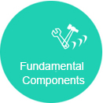
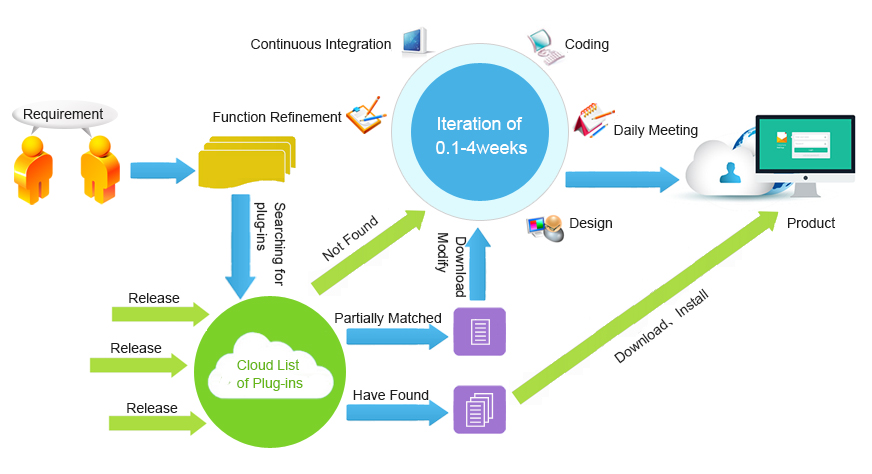

JXADF is an enterprise-level agile plug-in development platform based on B/S. Open Source , Free

J2EE-Based、OSGi
- J2EE-based

Methodology
- Provides a complete set of methodology for requirement, design, development, implementation, going-live and operation and maintenance

Adaptive UI
- Adaptive UI for mobile and desktop devices makes the idea of “Develop Once, Run Anywhere” a reality

Plug-in Development
- Supports hot deployment for plug-ins. 7 * 24 hours of continuous operation and maintenance can be achieved

Form
- Agile development of CRUD on the form (master-detail form). The developer can just focus on the business logic, neither JS nor CSS is needed, which can greatly improve the development efficiency and reduce the cost of development

Plug-in
- It can support the plug-ins that are adaptive to JianXin ADF and other standardized OSGI plugin-ins
Plug-in Store
- It provides various business plug-ins and basic platform plug-ins. Users can choose what they need out of the box
- 
Fundamental Components
- There are more than 50 components like Layout、appbar、pushbutton、textbox、lable、section、table、tree、treetable、panel、checkbox、code、link、form. The number is still increasing
Basic Function
- Internationalization, skin, dashboard, organization, user privilege and SSO,etc

Common Plug-in
- Plug-in management, Oracle OSB, Oracle BPM, JianXin BPM, Job Schedule, Email Sending, Message Service, LDAP, Agenda Management, BIRT

Each application in traditional agile development model requires 1 to 4 weeks for the iterative development. The full development processes are as follows:

With many mature plug-ins and components provided in JXADF, users can search for the plug-ins they need in the plug-in store. The perfectly satisfactory plug-ins can be used directly; while for the plug-ins partially consistent with the demands, they can be modified according to the existing plug-in prototype. A plug-in will be customized only if no one plug matches with the demand. Moreover, the customized development can just focus on the requirement of a single application, which means the efficiency of development will be greatly improved. Based on years of experience in concrete projects, the iteration cycle will be narrowed down to 2 hours to 2 weeks when plug-in development model is applied.

Plug-in development model can make it easier for the third-party developers to join in the development team. The third-parties provide business plug-ins of all walks of life, while JianXin provides basic platform and advantageous business applications,both of which form a good new-product ecological environment.

The mainstream development platforms in the market basically provide some development framework and some basic applications. All the business solutions need to be developed by the developers, who are weak in the second development of packaged softwares. JianXin Tech. solves the problem with their years of experience in platform and business solutions by successfully blending platform and business solutions with plug-ins in a perfect way.
Third-Party Developers
The platform can make the following profits for the third–party developers.
1：Accessible to enterprise-level agile plug-in development platform based on B/S.；
2：Various mature products are available; individualized business solutions can be quickly assembled；
3：Low cost of learning development and high development efficiency; individualized plug-in can be quickly developed；
4：Accessible to packaged business solutions, which can be applied to concrete projects；
5：The developed plug-in can be sold on JianXin Plug-in Store；
6：Able to acquire development technology supports
Plug-in Developers
The platform can bring profits for the plug-in developers from the following three perspectives：
1: Accessible to the development platform for free；
2: The developed plug-in can be sold on JianXin Plug-in Store；
3: Able to acquire development technology supports；
End-Customer
The end-customer can achieve the following benefits：
1: Accessible to a set of business solutions；
2: There are various plug-ins to choose ,which can not only greatly reduce the cost of purchasing new softwares, but also can continuously improve the system itself；
3：Able to choose the third-party developers on their own and develop business plug-in ；
Demo System
Website：http://demo.osgi.help
User name：admin
Password：123456
TIP: The demo data will be cleared on a irregular basis. The system is being improved continuously. There will be updating every week.
Join Us
We have great talents gathering around. We provide competitive salary. We are expecting you here and now!
If you plan to be the legendary master of JAVA Architect, WE WANT YOU!
If you are a talent with lofty ideals, excellent technology, noble pursuit and strong passion, please let me(wmzsoft@gmail.com)know you.